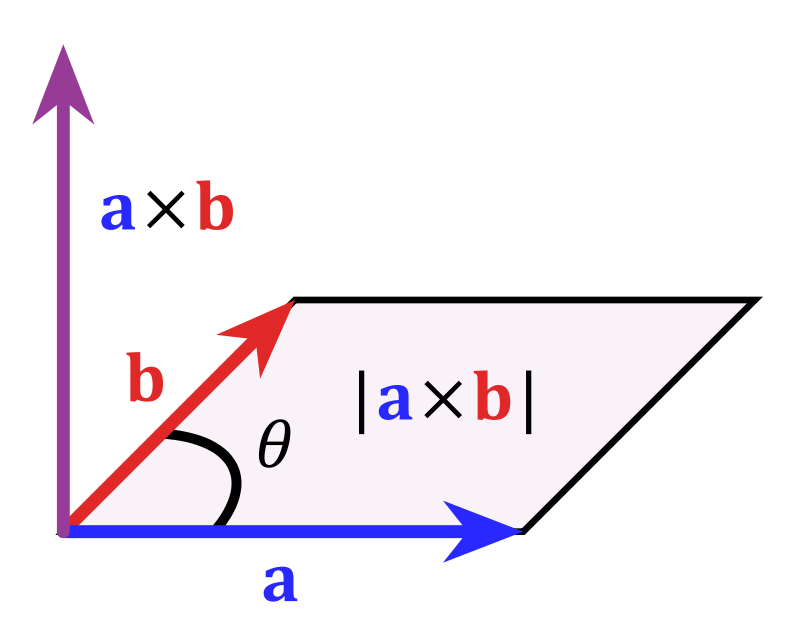
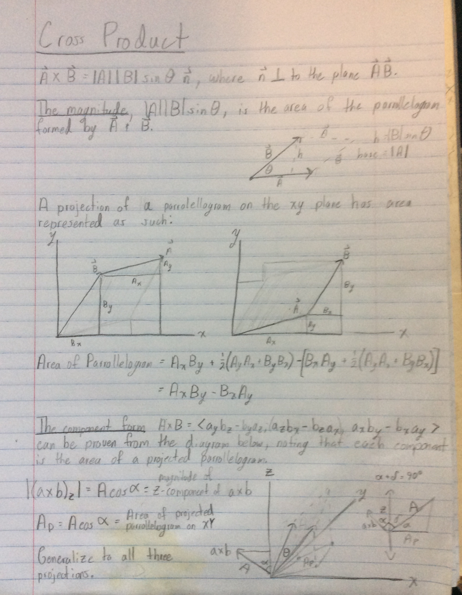

"...the cross product can be thought of as a measure of perpendicularity in the same way that the dot product is a measure of parallelism. Given two unit vectors, their cross product has a magnitude of 1 if the two are perpendicular and a magnitude of zero if the two are parallel." - Wikipedia
The cross product between two vectors is notably defined in two ways:
The first is as a vector orthogonal1 to the two input vectors ($\vec{n}$) with a length equal to the area of the parrallelogram those input vectors outline: 
Credit: Wikipedia
$\vec{a} \times \vec{b} = | \vec{a} || \vec{b} | \sin{\theta} \ \vec{n}$
Or it is defined in the 'component form,' which gives the $x$, $y$, and $z$ components of the cross-product using only the components of the input vectors.
$\vec{a} \times \vec{b} = \langle a_yb_z - a_zb_y, \ a_zb_x - a_xb_z, \ a_xb_y - a_yb_x \rangle$
The fact that $\vec{a} \times \vec{b} = | \vec{a} || \vec{b} | \sin{\theta} \ \vec{n} = \langle a_yb_z - a_zb_y, \ a_zb_x - a_xb_z, \ a_xb_y - a_yb_x \rangle $ are the same vectors is not obvious and will be proved here geometrically, requiring only basic knowledge of vector arithmetic and trigonometry.2 The formula $\vec{a} \times \vec{b} = | \vec{a} || \vec{b} | \sin{\theta} \ \vec{n}$ will not be explicitly used, but the geometric relationship it implies between the cross-product vector and resultant paralellograms will be - in the form of the diagram below.
The three core elements are:
The angle between the z-axis and the cross product vector $\vec{c}$ is $\delta$, and $\gamma$ is the angle between the z-axis and the parallelogram formed by $\vec{a}$ and $\vec{b}$. By the trigonmetric definition of the cross product, the angle between the parallelogram and $\vec{c}$ is $90^{\circ}$, so the sum of these two angles is also $90^{\circ}$.
$\gamma + \delta = 90^{\circ}$
The z-component of $\vec{c}$ can be found with just the knowledge of $| \vec{c}| = A$ and the angle between $\vec{c}$ and the z-axis equalling $\delta$:
$\vec{c}_z = (\vec{a} \times \vec{b})_z = A \cos{\delta}$
The angle between the primary paralellogram and the xy-plane will be used to calculate the area of the projection. That angle plus $\gamma$ equals $90^{\circ}$, since $\gamma + \delta = 90^{\circ}$, that angle is $\delta$.
Since the angle between two planes (xy-plane and parallelogram) is constant, the projected parrallelogram's area can be defined in terms of $A$ and the angle $\delta$, as if the parrallelograms were the base and hypotenuse of a right triangle - a basic trigonmetric formula, but generalized to all the similar triangles lined up between each paralellogram:
$A_{xy} = A \cos{\delta}$
So it is shown that the z-component of the cross product is equal to the area of the parallelogam projected onto the xy-plane:
$\vec{c}_z = (\vec{a} \times \vec{b})_z = A \cos{\delta} = A_{xy}$
This formula for the z-component comes from the trigonmetric properties of the cross-product, and is equal to the parrallelogram projected onto the xy-plane.
By rederiving the area for this same projected parrallelogram $A_{xy}$, but this time in terms of its $x$ and $y$ components rather than a trigonometric formula involving $z$, the same parrallelogram expressed in terms of the $z$ component and trigonomotry is expressed in terms of the $x$ and $y$ components of the vector.
Since the parrolellogram projected onto the $xy$ plane is shown to be equal to the z-component of the cross product, rederiving the area of that parrolellogram in terms of just the $xy$ components demonstrates that the component formula for the z-component follows from the trigonometric definition of the cross product.
Hover to highlight
Subtract the right area from the left:
$A_{xy} = $ $ \frac{1}{2}\vec{b}_x\vec{b}_y $ $ +
$ $ \vec{a}_x\vec{b}_y $ $ +
$ $ \frac{1}{2}\vec{a}_x\vec{a}_y $ $ -
$ $ (\frac{1}{2}\vec{a}_x\vec{a}_y $ $ +
$ $ \vec{b}_x\vec{a}_y $ $ +
$ $ \frac{1}{2}\vec{b}_x\vec{b}_y) $ $
\\ $
$
A_{xy} = \hspace{3.25em} $ $ \vec{a}_x\vec{b}_y $ $ \hspace{2.75em} - \hspace{4.4em} $ $ \vec{b}_x\vec{a}_y $
$A_{xy} = \vec{a}_x\vec{b}_y - \vec{b}_x\vec{a}_y$
The trignometric definition was used to show that the magnitude of one component, in this case the z-compomnent, of a cross product is equal to the paralellogram formed by the two vectors projected onto the other two components. By obtaining the the area of that same paralellogram in terms of just the magnitude of the two projected components, the z-component of the cross-product is obtained while only requiring the $x$ and $y$ components of the input vectors.
This proof only demonstrated the process for one component. To obtain the $x$ and $y$ components, the exact same proof can be performed by projecting the parrallelogram onto each of the two other planes ($xz$, $zy$), and again equating that projection to the length of the remaining third component.
So from a diagram built on the trigonometric definition of the cross-product, the pure component formula can be produced; that is, terms for each component of the cross-product vector which have no triginometric functions and only rely on the component magnitudes of the input vectors.
$| \vec{a} || \vec{b} | \sin{\theta} \ \vec{n} = \langle a_yb_z - a_zb_y, \ a_zb_x - a_xb_z, \ a_xb_y - a_yb_x \rangle $
One caveat is that there is nothing stopping any component in the resultant vector from being negative despite the concept of a 'negative area' being somewhat nonsensical when considering the projected paralellogram.
The resolution is to understand that the areas corrospond to the magnitudes of the resultant vector's components, and the direction of the cross product (which can be parralell to $\vec{a}$ and $\vec{b}$ and have the corrosponding magnitudes going both forward or in reverse) is simply defined according to the coordinate system's directionality. More on that can be read at Wikipedia.
I discovered this proof through kmhock's video here. Both of these definitions of the cross product are fundamental, and many basic vector problems are solved by interchanging them, but every proof I could find online up until this one required more advanced concepts in linear algebra than the cross product itself. I am not sure where he learned this proof or if he came up with, but without him I would not have found it at all.
It is my view that students should have accessible proofs available. Not only does this proof require a bare minimum of prerequisites, but it is also short and relativly intuitive; one can see how someone with one definition might discover the other.
One cannot build a ground up understanding by relying on advanced techniques to prove basic concepts; to understand a peice of math is to understand how that peice was discovered.
[1] Orthogonal, perpendicular, normal, crosswise, transverse, right-angled, etc.
[2] Requiring no more than what would be taught up to being told of this equivalence in a typical university course. It is not typical to initially prove this equivalence.
My original notes: 
{kind=link}